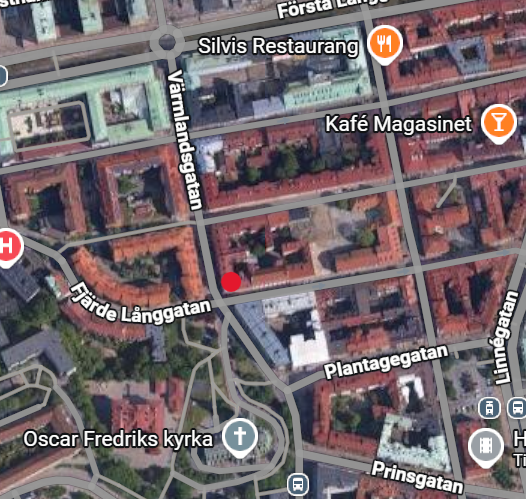

Vår historia och vision

Vårt kafé föddes ur en kärlek till gott kaffe, hembakat och möten mellan människor. Det som började som en enkel idé har vuxit till en plats där vardag möter kvalitet och där varje gäst ska känna sig välkommen.
Vår vision är att vara ett levande kafé som kombinerar tradition och nytänkande. Vi strävar efter att använda noggrant utvalda råvaror, gärna lokala och säsongsbetonade, och att skapa en miljö där man vill stanna lite längre – oavsett om det är för en snabb kaffe eller en lång lunch.
Vilka är vi?

Bakom kaféet står ett engagerat team med stor passion för service och matglädje. Ägaren driver verksamheten med fokus på kvalitet, hållbarhet och en personlig atmosfär.
Vår personal består av erfarna baristor, bagare och serveringspersonal som alla delar samma mål: att ge dig ett varmt bemötande och en riktigt bra upplevelse varje gång du besöker oss. Vi tror på glädje i arbetet – och att det märks i det vi serverar.
Karta, öppettider och kontakt
Du hittar oss centralt och lättillgängligt, med goda kommunikationer och närhet till stadens puls. Oavsett om du kommer förbi spontant eller planerar ditt besök i förväg är du alltid välkommen.

Öppettider
Måndag–Fredag: 08.00–18.00
Lördag–Söndag: 09.00–16.00
Kontakt
Har du frågor, vill boka bord eller komma i kontakt med oss av någon annan anledning? Använd gärna vårt kontaktformulär eller hör av dig direkt via telefon eller e-post. Vi återkommer så snart vi kan.